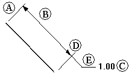
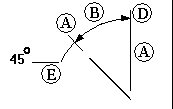
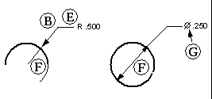

Types of dimensions
A linear dimension measures the length of a line or the distance between two points or elements. You can place linear dimensions with the Coordinate, Distance Between, Smart Dimension, and Symmetric Diameter commands.
An angular dimension measures the angle of a line, the sweep angle of an arc, or the angle between two or more lines or points. You can place angular dimensions with the Angle Between and Smart Dimension commands.
A radial dimension measures the radius of elements, such as arcs, circles, ellipses, or curves. You can place a radial dimension with the Smart Dimension command.
A diameter dimension measures the diameter of a circle. You can place a diameter dimension with the Smart Dimension command.
A coordinate dimension measures the distance from a common origin to one or more keypoints or elements.
In Solid Edge, ordinate dimensions are referred to as coordinate dimensions. For example, use the Coordinate Dimension command to place linear ordinate dimensions.
You can use the following commands in Solid Edge to place dimensions:
-
Smart Dimension command
-
Distance Between command
-
Angle Between command
-
Coordinate Dimension command (for linear dimensions to a common origin)
-
Automatic Coordinate Dimension command
-
Angular Coordinate Dimension command (for angular dimensions to a common axis)
-
Symmetric Diameter command
-
Chamfer command
The components of a dimension are as follows:



|
(A) |
Projection line |
(E) |
Break line |
|
(B) |
Dimension line |
(F) |
Symbol |
|
(C) |
(G) |
Connect line |
|
|
(D) |
Terminator |